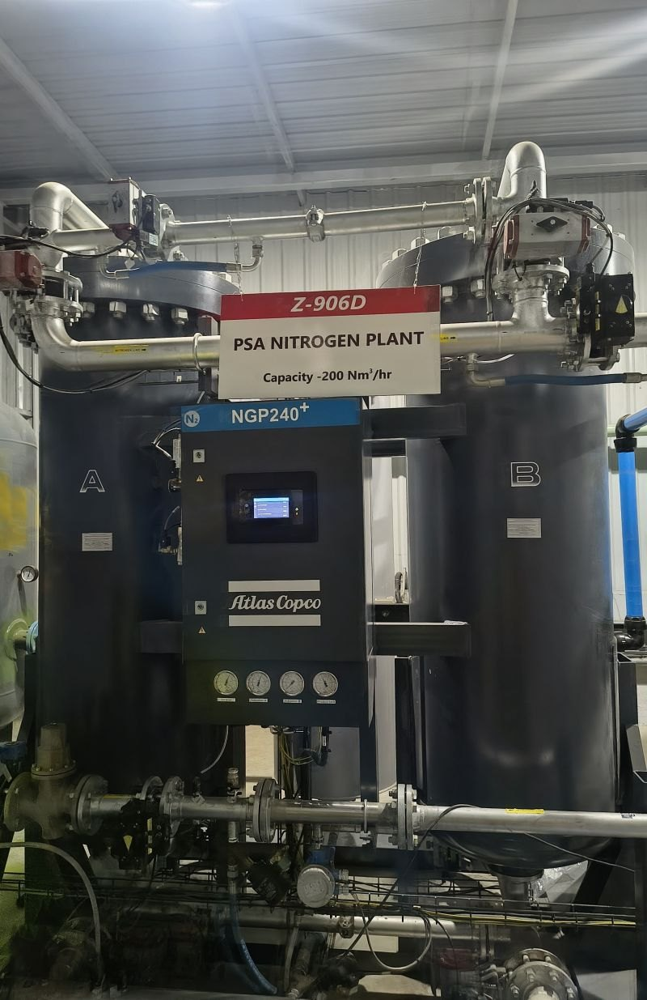
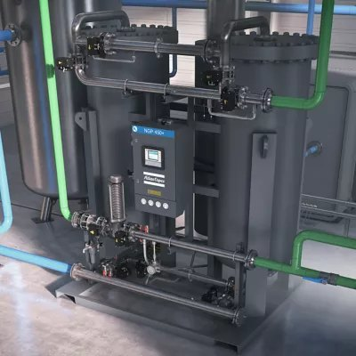
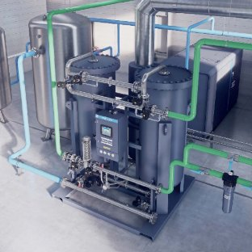
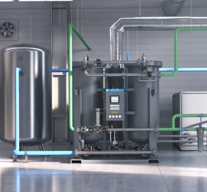
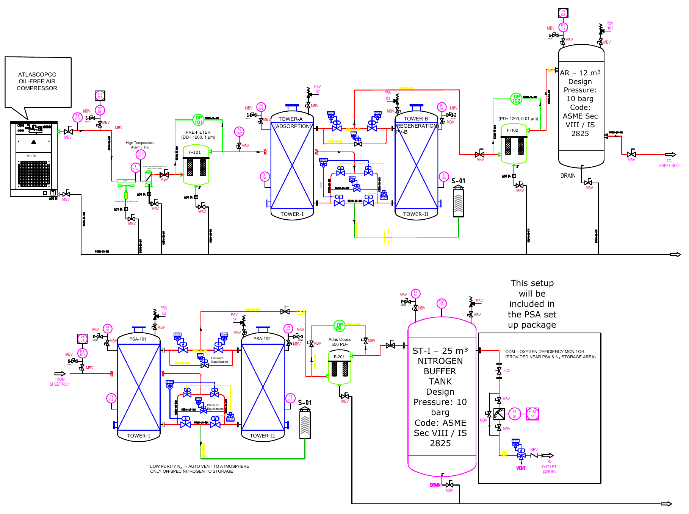

Air receiver — pressure stabilisation
The PSA valves switch on a ~60-second cycle. The 12 m³ receiver dampens pulsation, decouples the VSD compressor from the PSA, allows proper condensate removal and extends valve and sieve life.
Compressed-air-to-nitrogen generation package for ONGC, India: oil-free compressor, air-treatment train, twin-tower PSA and nitrogen buffer, sized for continuous automatic service in a tropical climate.

The selected PSA generator, an Atlas Copco NGP 240+, is a twin-tower unit: tower A adsorbs while tower B regenerates, switching on a short cycle. The air receiver and nitrogen buffer on either side keep that switching from reaching the compressor or the users.



Small images: Atlas Copco product renders of the NGP+ range, shown for reference — not the project unit.
Protect the PSA's carbon molecular sieve with clean, dry, oil-free air, then decouple supply from demand on both sides of the generator.
The PSA valves switch on a ~60-second cycle. The 12 m³ receiver dampens pulsation, decouples the VSD compressor from the PSA, allows proper condensate removal and extends valve and sieve life.
A PSA can't respond instantly to demand swings. The 25 m³ buffer absorbs short peaks, holds 99.9 % purity steady and gives autonomy during bed switching, control transitions and compressor trips.
Safeguards: zero-loss condensate drains at every collection point · product O₂ analyser with automatic venting of off-spec nitrogen · oxygen-deficiency monitor near the PSA and storage area · PSVs on both vessels · ESD interlocks.

Performed the mechanical works and complete 3D package design, integrating the compressor, air-treatment train, receivers, PSA generator and nitrogen buffer.
Worked on compressor, aftercooler, separator, dryer, air-receiver and nitrogen-buffer calculations and equipment sizing.
Created the package P&ID in consultation with the process engineer, covering interlocks, off-spec auto-venting and oxygen-deficiency monitoring, and coordinated changes with the process and instrumentation teams.
Prepared portions of the MTO/BOM and reviewed the complete package information for mechanical procurement and execution.
Handled customer/vendor interactions and conveyed package requirements to the controls and instrumentation team for equipment/interface selection.
Participated in FAT and supported SAT activities as part of project execution.
Each item sized from first principles with margins for tropical derating, adsorbent ageing and leakage.
NGP 240+ gives 180 Nm³/h at 99.9 % against a 160 Nm³/h duty — about 12–15 % margin.
180 × 4.0 = 720 Nm³/h; × 1.15 for derating, ageing and leakage = 828 Nm³/h → design ≈ 830 Nm³/h at 7 barg.
≥ 830 Nm³/h plus system ΔP to reach 7.5–8.0 barg → 900 Nm³/h, VSD, oil-free (ZR 110 VSD+, 8.6 bar).
ṁ = 900 × 1.2 / 3600 = 0.30 kg/s; Q = 0.30 × 1.005 × 45 = 13.6 kW; × 1.2 = 16.3 kW → duty ≥ 17 kW, air-cooled.
Q = 900 / 9.6 = 94 m³/h actual; v = (94/3600) / 0.0123 = 2.1 m/s, below the 3 m/s limit → WSD 750, DN125.
Correction 1.20 (55 °C) × 0.95 (8.6 bar) = 1.14; 900 × 1.14 = 1026 Nm³/h → design ≥ 1050 Nm³/h, CDX 330+ heatless.
| Vessel | Hold-up basis | Calc. volume | Selected | Design P | PSV |
|---|---|---|---|---|---|
| Air receiver | 45 s at 15 Nm³/min | 11.25 Nm³ | 12 m³, vertical | 10 barg | API orifice E |
| N₂ buffer | 8 min at 2.67 Nm³/min | 21.4 Nm³ | 25 m³, vertical | 10 barg | API orifice D |
SA-516 Gr 70 / IS 2002 · CA 1.5 mm · 2:1 elliptical heads · joint efficiency 0.85 · spot RT · test 15 barg (1.5 × design).
| # | Equipment | Selected model | Key rating |
|---|---|---|---|
| 1 | Oil-free screw compressor (VSD) | Atlas Copco ZR 110 VSD+ | 900 Nm³/h · 8.6 bar · Class 0 |
| 2 | Air-cooled aftercooler | Finned, TD type | ≥ 17 kW · ≤ 55 °C out |
| 3 | Moisture separator | Atlas Copco WSD 750 | DN125 · ≥ 99 % at 10 µm |
| 4 | Coalescing pre-filter | Atlas Copco DD+ 1200 | 1 µm · 1200 Nm³/h |
| 5 | Heatless desiccant dryer | Atlas Copco CDX 330+ | ~1100 Nm³/h · −40 °C PDP |
| 6 | Particulate after-filter | Atlas Copco PD+ 1200 | 0.01 µm · 99.999 % |
| 7 | Compressed-air receiver | Vertical, SA-516 Gr 70 | 12 m³ · 10 barg |
| 8 | PSA nitrogen generator | Atlas Copco NGP 240+ | 180 Nm³/h at 99.9 % |
| 9 | Nitrogen buffer tank | Vertical, SA-516 Gr 70 | 25 m³ · 10 barg |
Pre-filter and 0.01 µm after-filter.
−40 °C PDP — better than required.
Class 0 oil-free compressor.
ISO 8573-1:2010 [2:4:1] compliance at the PSA inlet.
Package follows oil & gas technical bid evaluation (TBE) expectations: upstream and downstream buffering, zero-loss condensate management, full P / T / ΔP / PDP instrumentation and layered safety from off-spec venting to oxygen-deficiency monitoring.
The project takes a nitrogen requirement past catalogue selection: every item from compressor to buffer is sized from first principles with explicit margins, the air quality is verified against ISO 8573-1 at the PSA inlet, and the vessels, relief and safety functions are matched to oil & gas practice.
← Back to projects